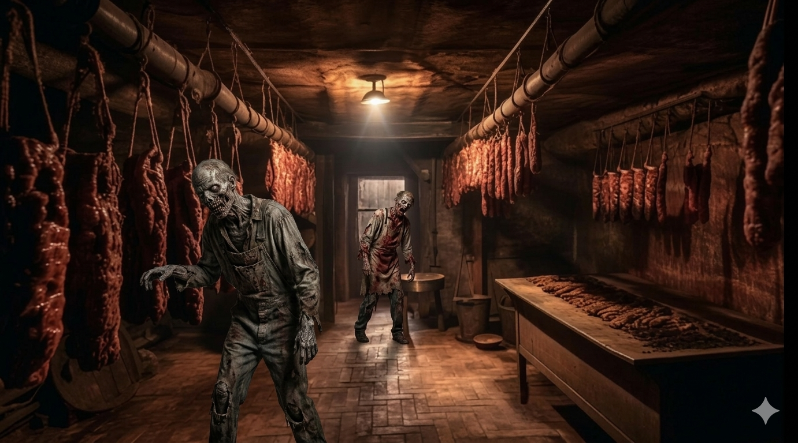

Du näherst dich der Fleischabteilung und hörst plötzlich ein leises Stöhnen. Du bleibst stehen und siehst dich in alle Richtungen um. Du siehst aber niemanden. „Muss ich mir eingebildet haben", denkst du dir. Du gehst langsam weiter, um in der Fleischabteilung nach etwas essbaren zu suchen. Plötzlich hörst du ein weiteres Stöhnen, diesmal ist es lauter. Du zuckst zusammen und bleibst stehen. Du drehst dich um und siehst ein hässliches, grünes Ding vor dir stehen. An ihm gibt es nichts was dich ansatzweise an einen Menschen erinnert. Erschrocken machst du einen Schritt zurück und fällst zu Boden.